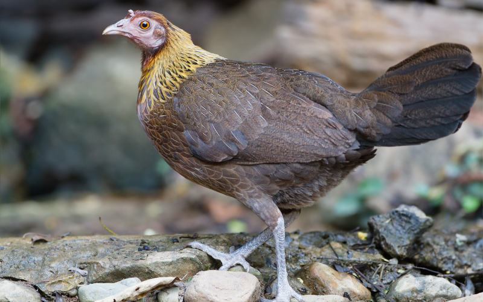
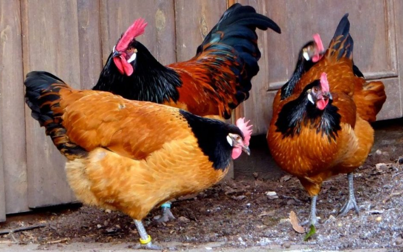
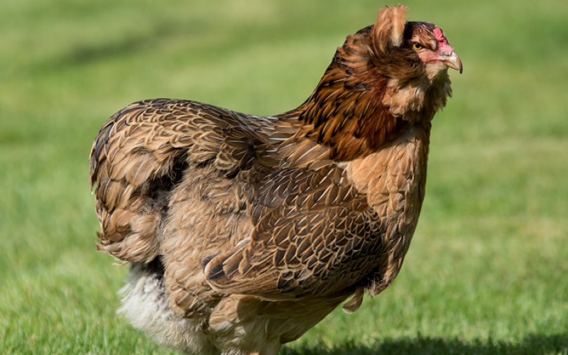
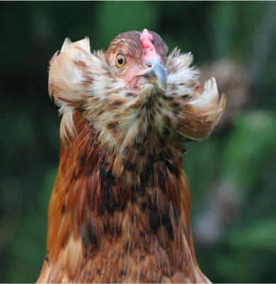
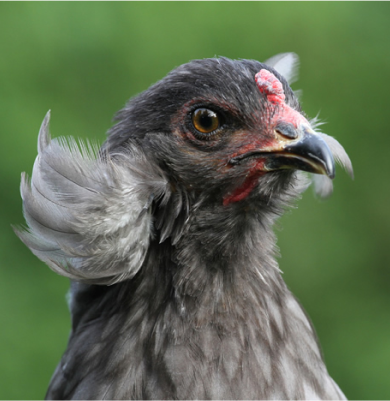

Одомашнивание животных также известно под словом доместикация.
Предок курицы
Этот вопрос волновал ученых с очень давних времен, но недавно примерная дата одомашнивания кур наконец-то
стала известна. В XIX веке натуралист Чарлз Дарвин (Charles Darwin) выдвинул предположение, что предками
известным нам сегодня куриц являются банкивские джунглевые курицы (Gallus gallus). А все потому, что два
этих вида очень похожи и при скрещивании дают здоровое потомство без каких-либо отклонений в развитии. Если
бы между ними не было родственной связи, цыплята родились бы как минимум нездоровыми.

Так выглядит банкивская джунглевая курица
Ученые уже почти уверены, что домашние птицы произошли от живущих в джунглях птиц. Только вот определить,
где именно были одомашнены курицы, было очень сложно. Дело в том, что банкивские курицы с очень давних
времен обитают в разных местах нашей планеты, от Индонезии до Пакистана.
«Истоки разнообразия птиц окутаны тайной — кроме того, что мы знаем, что современные птицы возникли
в
какой-то момент к концу эпохи динозавров, у нас очень мало ископаемых свидетельств о них, пока не
ударил
астероид».
Но со временем появились новые технологии и ученые научились сравнивать образцы ДНК животных — молекулах,
внутри которых хранятся инструкции, по которым развиваются живые организмы.
Генетическое исследование
Сравнением ДНК разных видов куриц на протяжении долгих лет занимался китайский исследователь Цзяньлинь Хань
(Jianlin Han). Он собрал генетические образцы домашних и диких куриц из разных регионов Азии и Африки. В
общей сложности он собрал 850 образцов ДНК и начал их сравнивать. Результаты его научной работы были
опубликованы в научном журнале Cell Research.
В России насчитывается около 100 пород кур.
Сравнение генетических данных показало, что самыми близкими родственниками ныне живущих домашних куриц
является вид Gallus gallus spadiceus. Они обитают
в лесах Таиланда и юго-западной части Китая. Судя по генетическим данным, разделение куриц на диких и
домашних произошло примерно 7500 лет назад. Также есть доказательства того, что впоследствии домашние курицы
скрещивались с дикими, что привело к появлению новых видов.
Происхождение курицы
В конечном итоге получилось, что курицы были одомашнены около 7500 лет назад,
на территории Китая. Однако, это усредненные данные, потому что исследование показало очень размытые итоги —
если быть точнее, одомашнивание произошло
где-то между 6200 и 12 800 лет назад. Но в то, что домашние курицы появились настолько давно, ученым верится
с трудом. А все потому, что даже рис начал выращиваться 9 000 лет назад. Так что предположение, что домашние
курицы возникли 7500 лет назад, звучит более правдоподобно.

На сегодняшний день существует очень много разновидностей кур, которые различаются между собой окраской и
особенностями разведения.
Есть курицы, которые несут не белые и коричневые яйца, а зеленые и голубые. Например, цветные яйца несут
курицы вида араукана.
Эти птицы были обнаружены в одном из американских племен, в честь которого и получили свое название. Они
обладают необычным внешним видом с пышными «бакенбардами» и, скорее, относятся к декоративным видам. Их
яйцами особо не насытишься, потому что они маленьки и в год их появляется только по 170-180 штук.

Так выглядят курицы породы араукана
Источник: https://www.thehappychickencoop.com/
Теперь мы примерно знаем, кто предками домашних куриц являются дикие птицы.
Но от кого произошли курицы, которые живут в лесах? Об этом я писал в отдельном материале — их предок жил
примерно 66 миллионов лет назад, во времена динозавров. Считаю, что это очень интересная тема для изучения,
поэтому рекомендую заняться чтением прямо сейчас!


А вы знаете, что возникло раньше: яйцо или курица?
Разновидности домашних кур
В течение нескольких тысячелетий, на протяжении которых человек разводит домашних кур, было выведено
огромное количество самых разных пород этих птиц. До сих пор сохранилось декоративное и бойцовое направление
использования потомков Gallus gallus, однако сегодня наиболее распространённой областью применения животного
является всё же пищевая промышленность.
Однако, поскольку куриные яйца по пищевой ценности не менее популярны, чем мясо, выведение новых пород кур
происходит по трём главным направлениям:
- яичное;
- мясо-яичное;
- мясное;
Представители каждой из указанных разновидностей птиц отличаются определёнными особенностями.
- Это интересно
- Генетика
- Животные Земли